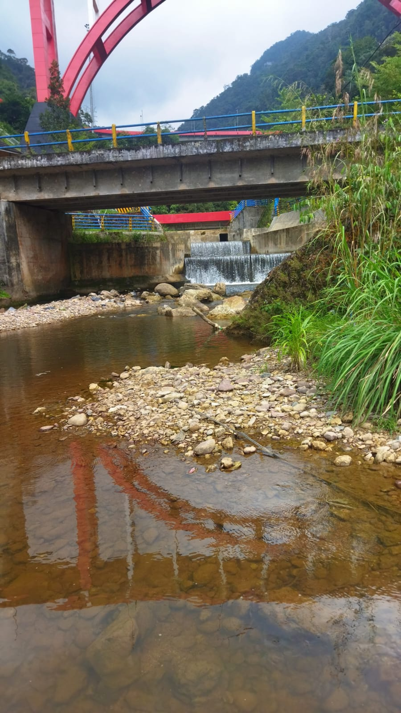
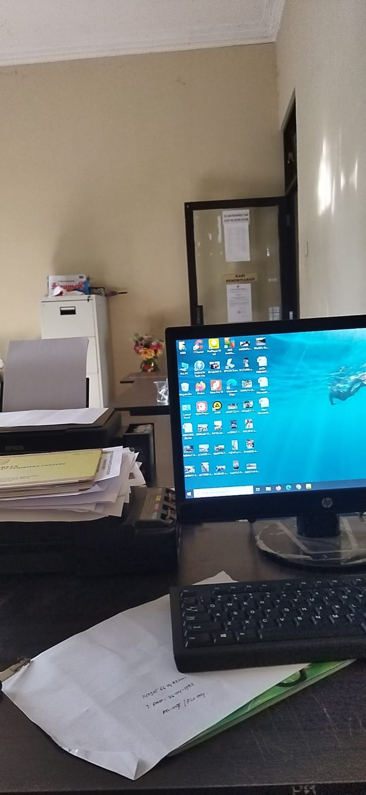
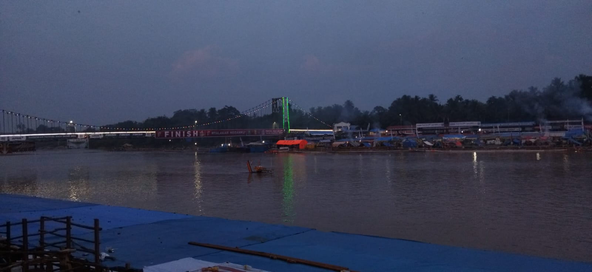
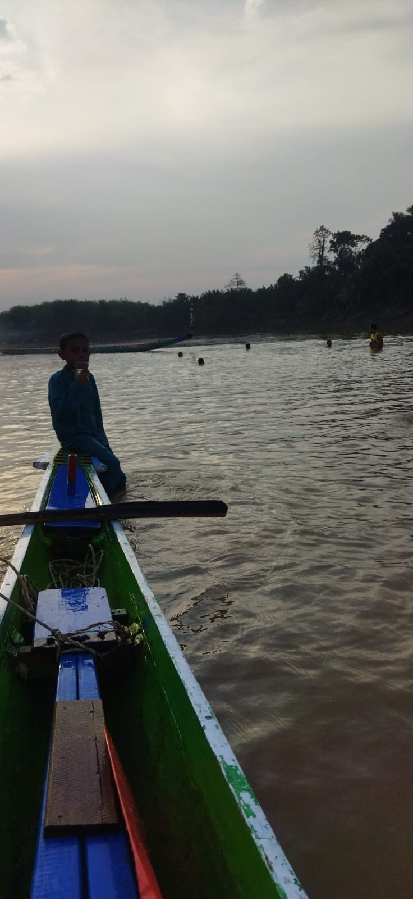

Galeri dan Prestasi




Prestasi
- Prestasi 1: Juara Ranking 1 Tingkat SMP / MTS Kecamatan Tanah Merah - Indragiri Hilir
- Prestasi 2: Juara Ranking 1 SMPN 1 Tanah merah
- Prestasi 3: Juara 1 Lomba Jurnalistik Tingkat SMP sederajat Se-Sumatera
- Prestasi 4: Penghargaan Peserta Pekan Raya Biologi UNRI